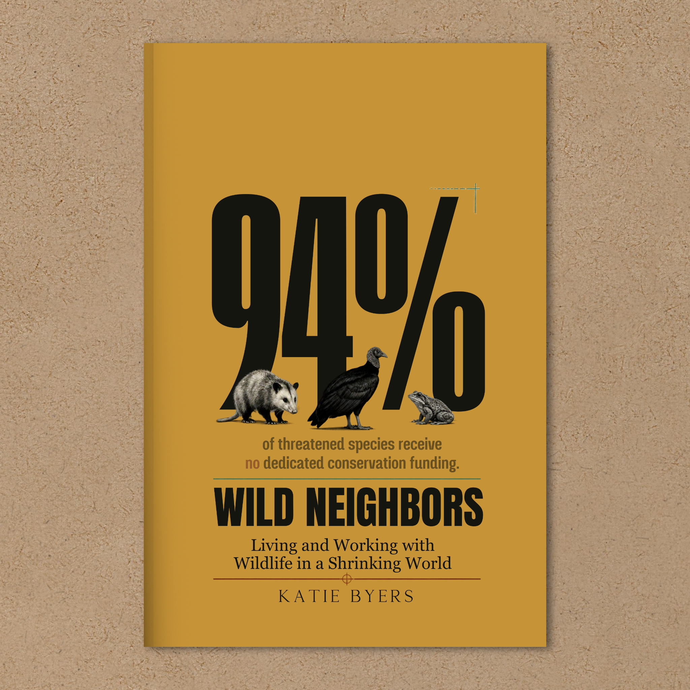
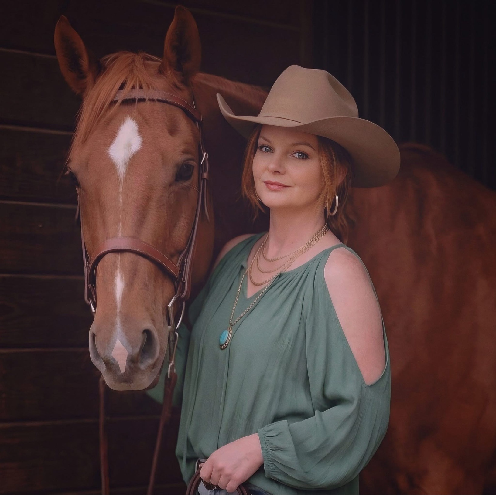

Katie Byers · Author · Debut book, October 2026
Wild Neighbors
Living and Working With Wildlife in a Shrinking World
A field-tested guide to coexistence, accountability, and building the future conservation actually needs.
Written from more than thirty years of getting her hands dirty.
Also free to read with Kindle Unlimited.

01 · The Book
Ten chapters, zero fluff.
This is not a memoir. It is the book for the people making wildlife decisions, and the people holding them to it.
The wild world is shrinking, and the animals left in it are running out of room, funding, and patience.
Wild Neighbors takes on the questions conservation usually avoids, grounded in decades of rehabilitation and fieldwork on the Texas Gulf Coast. Every chapter ends with concrete things you can actually do.
- /01The myth of the empty landscape, and what was here before we called it empty.
- /02Who pays for conservation, and why the answer shapes everything.
- /03What accountability from wildlife agencies actually looks like.
- /04Coexistence as a practice, not a slogan.
The landscape is not empty and it never was.From Wild Neighbors
02 · The Author
Field experience, in every line.

Katie Byers is an investigative conservation journalist and the writer behind Thicket & Bone. She brings more than thirty years of hands-on wildlife rehabilitation and livestock management on the Texas Gulf Coast, and works as a licensed Texas wildlife rehabilitation subpermittee.
She serves as vice president of Lumpy Lizard Reptile, Exotics, and Poultry Rescue and volunteers with Gulf Coast Wildlife Rescue. Her reporting covers the policies and industries shaping the Gulf Coast wild, from endangered species rules to energy infrastructure.
She lives in Edna, Texas, with Alice the rescue dog, five indoor-only cats (Artemis has claimed the bedroom), two rabbits, and a rotating cast of wild patients. The overlooked ones deserve good art, and good policy, too.
04 · Contact
Say hello
For interviews, events, review copies, and everything else book-shaped. Write to info@thicketandbone.com, or send a message right here.